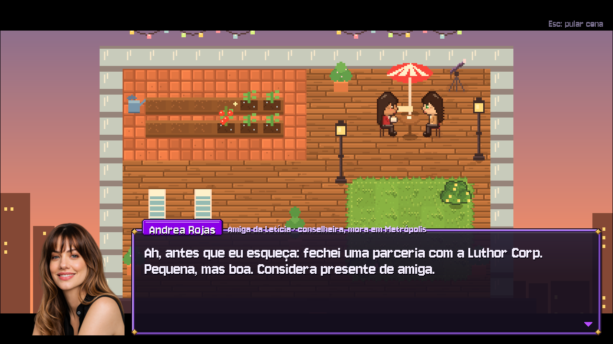

Andrea Rojas
Andrea Rojas é amiga da Letícia desde a faculdade, em Gotham, e hoje comanda os próprios negócios em Metrópolis. Não mora em National City, então não entra no painel de relacionamentos: a amizade cresce pelas mensagens e pelas visitas. No conselho da Luthor Corp, ela fica do lado da Letícia.
Visitas
Uma vez por estação ela vem à cidade. Na véspera chega um aviso, de manhã o convite pelo celular, e a cena toca quando a Letícia chega ao lugar no horário. Cada visita dá energia, carisma, um presente e uma parceria de negócios de $400 para a Luthor Corp.
| Estação | Dia | Onde | Horário | Presente |
|---|---|---|---|---|
| Primavera | Dia 11 (quinta) | No Grão Nobre | 9h às 13h | |
| Verão | Dia 12 (sexta) | Na praia, perto do píer | 17h às 20h | |
| Outono | Dia 11 (quinta) | Na Ricci Trattoria | 19h às 22h | |
| Inverno | Dia 11 (quinta) | No terraço da sua cobertura | 18h às 22h |
Mensagens
A partir do 4º dia ela manda mensagens de vez em quando, como as amigas da cidade. Cada mensagem tem três respostas e ela sempre responde de volta.


Retratos


| Luthor Corp | Sam |
|---|---|
| CatCo | |
| Moradores | |
| Conti Moretti | |
| De fora da cidade |